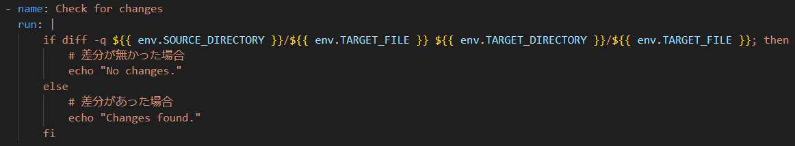
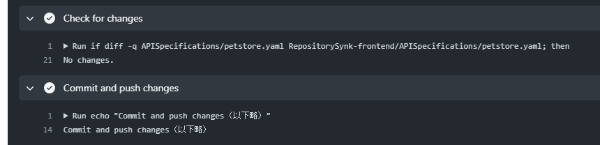
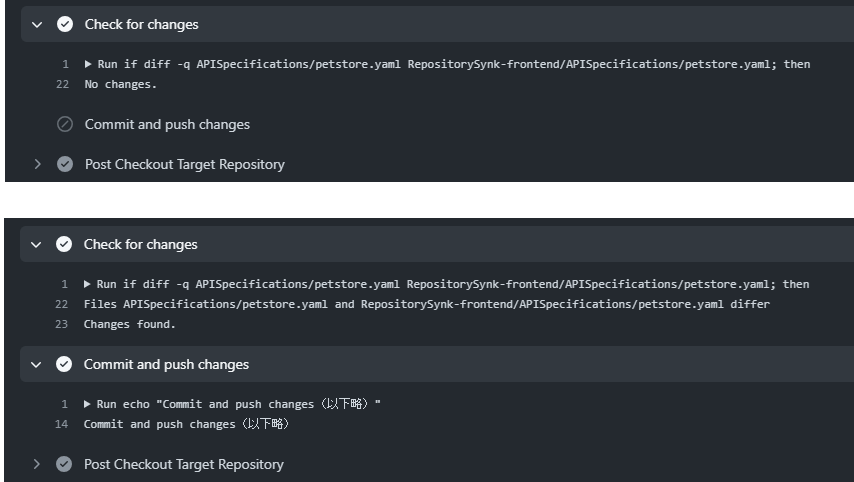
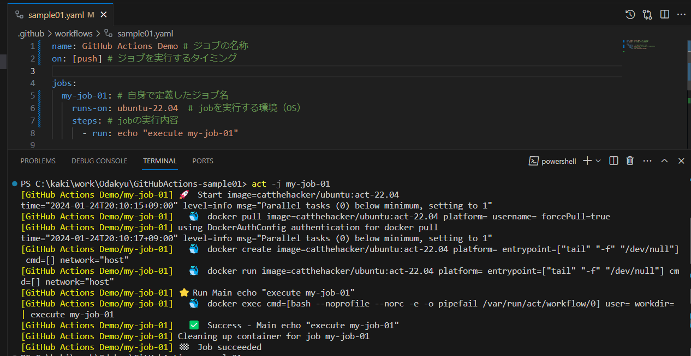

GitHub Actions の使い方とハマリどころについて
kakisoft
GitHub Actions とは
GitHub 公式の CI/CD の仕組み。
コードの変更やプッシュが行われたときに、特定のワークフローを自動的に実行できる。
使い方
.github/workflows ディレクトリに、yamlファイルを配置。
（ファイル名は何でもいい）

こんな感じでジョブが動く。

基本構造

使うだけなら超簡単。
しかし、やりたい事を実現させるには、結構変なハマり所もある。
今回実現したい事
バックエンドのリポジトリとフロントエンドのリポジトリにて、Open API 仕様書の同期を取る。
（backend で更新した内容が、自動的に frontend にも反映されるようにする）
考えた方法
バックエンド側のリポジトリ push した時、
差分をフロントエンド側にも反映させる。
フロント側のリポジトリを clone し、
バックエンド側で編集した内容を反映させ、pushする。
push 方法
GitHub Actions には、いくつかの命令が定義されているが、pushコマンドは無いので、コマンドにて実行。
（この部分の詳細は割愛します）
バックエンド側のリポジトリの内容が、フロント側に反映されたことを確認。
しかし、変更が無かった場合、エラーが発生する。
コミットする内容が無かった場合、exit code 1 を出力し、エラーで終了してしまう。
必要な処理
- 変更があれば push
- 変更が無ければ pushしない
「変更があるかどうか」を判定し、処理を分岐をする。
ポイント１．条件判定
変更前の内容と変更後の内容で diff を取る。
diff 判定した時点で、exit code 1 で終了。（エラーで終了する）
※差分が無かった場合は、エラーが発生しない。
「> /dev/null」がマズいのか？ と思い、変数化してみるが、これでもエラー。
解決方法
判定条件は if 文の中に入れる。

途中で exit code が出ないように気を遣う必要がある模様。
ポイント２．分岐処理
実現したい事
- 変更があれば push
- 変更が無ければ pushしない
↓
＜実装内容＞
変更が無ければ、それ以降のジョブを実行しない
調べてみると、「 “exit 0” で処理を終了させれば OK」という情報が出てくる。
しかし、“exit 0” で抜けても、後続のジョブを実行している。

他には、「 “exit 1” でジョブを強制終了させる」という情報が出てくる。
しかし、この方法だと、ジョブそのものがエラーという扱いになる。
（「変更が無ければ pushしない」という処理にしたいので、pushしないケースをエラーにしたい訳ではない）
解決方法
変数に値を保持する。
以下のように、「変更がない場合、後続のジョブを実行しない」という制御ができる。

ただし、この方法で分岐処理を記述する場合、後続のジョブが複数ある場合、それら全てに判定式が必要となる。
今回の場合、判定後に実行するジョブは１つだけだったので、複雑化せずに済みました。
（最適解かどうかは議論の余地がありますが、シェルスクリプトを if の中に書くよりは良いアプローチだと思っています）
他の解決方法
「continue-on-error: true」 というオプションを付けると、“exit 1” でエラーを出力しても後続の処理を実行するので、この方法を使う事も可。
ただし、本当にエラーと判断してジョブを終了させたい場合との区別が付けられなくなるので、今回はその方法は採用しませんでした。
ポイント３．変数
変数の記述方法が変わる。
トラップ１
トラップ２
まとめ
- 使うだけなら簡単だが、やりたい事を実現させるには、苦労する事がある。
- 極力、ジョブはシンプルな構成にした方がいい。
- 分岐処理も、できるだけ作らない方がいい。
- 上手く行かない場合、何が原因で上手く行かないのか分かりづらいので、問題を切り分けて自前の環境で何度も実行して調査する必要がある。
- プラグインは意外と活用できない。
おまけ
GitHub Actionsをローカルで実行する(nektos/act)

おわり